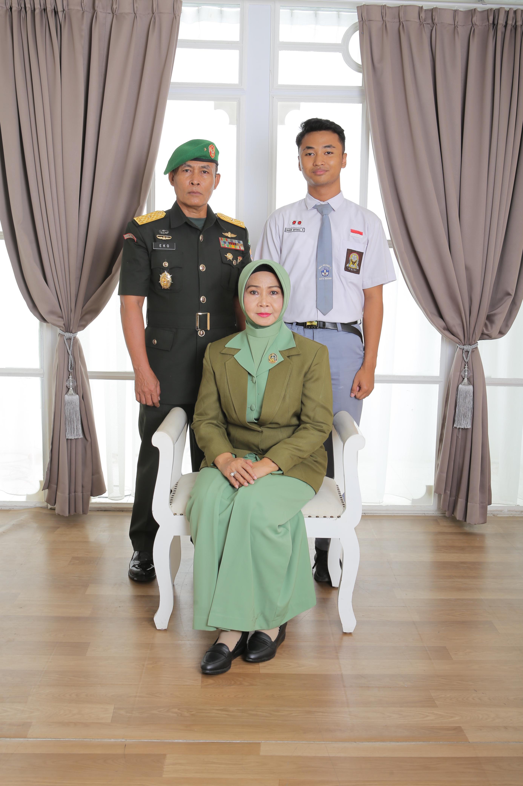

Eager Ibtihal Robbighfirly Saya adalah seorang siswa di SMA Negeri 2 Madiun. Selain fokus pada dunia pendidikan, saya juga memiliki berbagai minat di luar profesi, seperti fotografi, beladiri, dan menembak. Dalam dunia olahraga menembak, saya berhasil meraih Juara 3 Perorangan Pistol Presisi 25 Meter di ajang KASAD Cup dengan skor 92.3, sebuah pencapaian yang menjadi bukti dedikasi dan disiplin saya dalam mengasah keterampilan. Fotografi dan beladiri saya juga berhasil meraih juara 1 newaza system kejuaraan jujitsu se kota Madiun, hal tersebut merupakan bagian penting dalam hidup saya, di mana saya terus berusaha untuk berkembang dan mengeksplorasi lebih dalam kedua bidang tersebut. Saya percaya bahwa keseimbangan antara pekerjaan, minat, dan pencapaian pribadi akan membentuk seseorang yang tidak hanya sukses dalam karier, tetapi juga memiliki kehidupan yang penuh makna. Di website ini, saya ingin berbagi pengalaman, pemikiran, dan karya yang dapat menginspirasi orang lain untuk terus berkembang dan mengejar passion mereka.